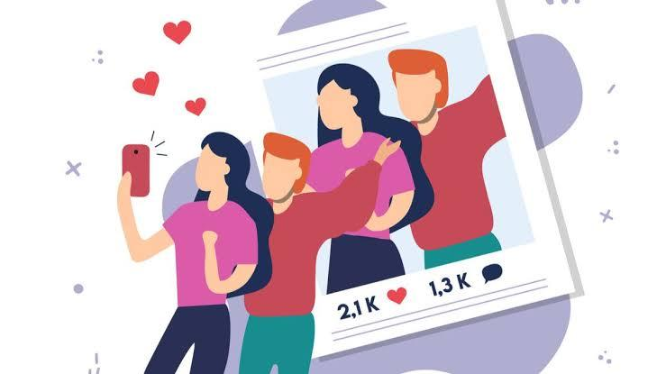

Jika digunakan secara bijak, media sosial justru akan memberikan banyak keuntungan bagi anak-anak dan remaja, seperti: 1) Sarana komunikasi dengan teman atau keluarga. 2) Wadah untuk mengekspresikan diri serta berbagi karya seni, video, atau tulisan. 3) Sarana mengeksplorasi minat dan bakat. 4) Wadah untuk memperoleh informasi dan menambah wawasan.